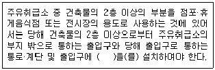
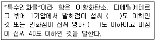
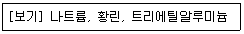
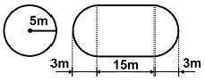
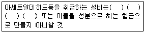

위험물기능사 (2015-04-04 기출문제)
1과목: 화재 예방과 소화방법
1. 위험물안전관리법령에 따라 다음 ( ) 안에 알맞은 용어는?

- 피난사다리
- 경보기
- 유도등
- CCTV
(정답률: 97%)

2. 다음 중 물이 소화약제로 쓰이는 이유로 가장 거리가 먼 것은?
- 쉽게 구할 수 있다.
- 제거소화가 잘 된다.
- 취급이 간편하다.
- 기화잠열이 크다.
(정답률: 83%)
3. 위험물안전관리법령상 전기설비에 적응성이 없는 소화설비는?
- 포소화설비
- 이산화탄소소화설비
- 할로겐화합물소화설비
- 물분무소화설비
(정답률: 59%)
4. 니트로셀룰로오스의 저장·취급방법으로 틀린 것은?
- 직사광선을 피해 저장한다.
- 되도록 장기간 보관하여 안정화된 후에 사용한다.
- 유기과산화물류, 강산화제와의 접촉을 피한다.
- 건조 상태에 이르면 위험하므로 습한 상태를 유지한다.
(정답률: 76%)
5. 위험물안전관리법령상 제3류 위험물의 금수성물질 화재 시 적응성이 있는 소화약제는?
- 탄산수소염류분말
- 물
- 이산화탄소
- 할로겐화합물
(정답률: 87%)
6. 할론 1301의 증기 비중은? (단, 불소의 원자량은 19, 브롬의 원자량은 80, 염소의 원자량은 35.5이고 공기의 분자량은 29이다.)
- 2.14
- 4.15
- 5.14
- 6.15
(정답률: 67%)
7. 위험물안전관리법령상 간이탱크저장소에 대한 설명 중 틀린 것은?
- 간이저장탱크의 용량은 600리터 이하여야 한다.
- 하나의 간이탱크저장소에 설치하는 간이저장탱크는 5개 이하여야 한다.
- 간이저장탱크는 두께 3.2㎜ 이상의 강판으로 흠이 없도록 제작하여야 한다.
- 간이저장탱크는 70kPa의 압력으로 10분간의 수압시험을 실시하여 새거나 변형되지 않아야 한다.
(정답률: 67%)
8. 가연성 물질과 주된 연소형태의 연결이 틀린 것은?
- 종이, 섬유 - 분해연소
- 셀룰로이드, TNT - 자기연소
- 목재, 석탄 - 표면연소
- 유황, 알코올 - 증발연소
(정답률: 64%)
9. B, C급 화재뿐만 아니라 A급 화재까지도 사용이 가능한 분말소화약제는?
- 제1종 분말소화약제
- 제2종 분말소화약제
- 제3종 분말소화약제
- 제4종 분말소화약제
(정답률: 86%)
10. 식용유 화재 시 제1종 분말소화약제를 이용하여 화재의 제어가 가능하다. 이때의 소화원리에 가장 가까운 것은?
- 촉매효과에 의한 질식소화
- 비누화 반응에 의한 질식소화
- 요오드화에 의한 냉각소화
- 가수분해 반응에 의한 냉각소화
(정답률: 77%)
11. 위험물안전관리법령에서 정한 자동화재탐지설비에 대한 기준으로 틀린 것은? (단, 원칙적인 경우에 한한다.)
- 경계구역은 건축물 그 밖의 공작물의 2 이상의 층에 걸치지 아니하도록 할 것
- 하나의 경계구역의 면적은 600㎡ 이하로 할 것
- 하나의 경계구역의 한 변 길이는 30m 이하로 할 것
- 자동화재탐지설비에는 비상전원을 설치할 것
(정답률: 64%)
12. 다음 중 산화성 물질이 아닌 것은?
- 무기과산화물
- 과염소산
- 질산염류
- 마그네슘
(정답률: 82%)
13. 위험물제조소에서 국소방식의 배출설비 배출능력은 1시간 당 배출장소 용적의 몇 배 이상인 것으로 하여야 하는가?
- 5
- 10
- 15
- 20
(정답률: 53%)
14. 유류화재 시 발생하는 이상현상인 보일오버(Boil over)의 방지대책으로 가장 거리가 먼 것은?
- 탱크하부에 배수관을 설치하여 탱크 저면의 수층을 방지한다.
- 적당한 시기에 모래나 팽창질석, 비등석을 넣어 불의 과열을 방지한다.
- 냉각수를 대량 첨가하여 유류와 물의 과열을 방지한다.
- 탱크 내용물의 기계적 교반을 통하여 에멸션상태로 하여 수층형성을 방지한다.
(정답률: 76%)
15. 20℃의 물 100kg이 100℃ 수증기로 증발하면 몇 kcal의 열량을 흡수할 수 있는가? (단, 물의 증발잠열은 540kcal이다.)
- 540
- 7800
- 62000
- 108000
(정답률: 66%)
16. 제5류 위험물의 화재 시 적응성이 있는 소화설비는?
- 분말 소화설비
- 할로겐화합물 소화설비
- 물분무 소화설비
- 이산화탄소 소화설비
(정답률: 75%)
17. 위험물안전관리법에서 정한 정전기를 유효하게 제거할 수 있는 방법에 해당하지 않는 것은?
- 위험물 이송 시 배관 내 유속을 빠르게 하는 방법
- 공기를 이온화하는 방법
- 접지에 의한 방법
- 공기 중의 상대습도를 70% 이상으로 하는 방법
(정답률: 89%)
18. 다음 중 가연물이 고체 덩어리보다 분말 가루일 때 위험성이 큰 이유로 가장 옳은 것은?
- 공기와 접촉 면적이 크기 때문이다.
- 열전도율이 크기 때문이다.
- 흡열반응을 하기 때문이다.
- 활성에너지가 크기 때문이다.
(정답률: 80%)
19. 소화약제로 사용할 수 없는 물질은?
- 이산화탄소
- 제1인산암모늄
- 탄산수소나트륨
- 브롬산암모늄
(정답률: 74%)
20. 물과 접촉하면 열과 산소가 발생하는 것은?
- NaClO2
- NaClO3
- KMnO4
- Na2O2
(정답률: 60%)
2과목: 위험물의 화학적 성질 및 취급
21. 위험물에 대한 설명으로 틀린 것은?
- 적린은 연소하면 유독성 물질이 발생한다.
- 마그네슘은 연소하면 가연성 수소가스가 발생한다.
- 유황은 분진폭발의 위험이 있다.
- 황화린에는 P4S3, P2S5, P4S7 등이 있다.
(정답률: 55%)
22. 위험물안전관리법령상 옥내저장탱크와 탱크전용실의 벽과의 사이 및 옥내저장탱크의 상호 간에는 몇 m 이상의 간격을 유지하여야 하는가?
- 0.5
- 1
- 1.5
- 2
(정답률: 66%)
23. 벤조일퍼옥사이드에 대한 설명으로 틀린 것은?
- 무색, 무취의 투명한 액체이다.
- 가급적 소분하여 저장한다.
- 제5류 위험물에 해당한다.
- 품명은 유기과산화물이다.
(정답률: 61%)
24. 2가지 물질을 섞었을 때 수소가 발생하는 것은?
- 칼륨과 에탄올
- 과산화마그네슘과 염화수소
- 과산화칼륨과 탄산가스
- 오황화린과 물
(정답률: 53%)
25. 다음 위험물의 지정수량 배수의 총합은 얼마인가? [질산 150㎏, 과산화수소수 420㎏,, 과염소산 300㎏,]
- 2.5
- 2.9
- 3.4
- 3.9
(정답률: 68%)
26. 위험물안전관리법령상 운송책임자의 감독·지원을 받아 운송하여야 하는 위험물은?
- 알킬리튬
- 과산화수소
- 가솔린
- 경유
(정답률: 88%)
27. 「자동화재탐지설비 일반점검표」의 점검내용이 “변형·손상의 유무, 표시의 적부, 경계구역 일람도의 적부, 기능의 적부”인 점검항목은?
- 감지기
- 중계기
- 수신기
- 발신기
(정답률: 67%)
28. 위험물안전관리법령상 지정수량 10배 이상의 위험물을 저장하는 제조소에 설치하여야 하는 경보설비의 종류가 아닌 것은?
- 자동화재탐지설비
- 자동화재속보설비
- 휴대용 확성기
- 비상방송설비
(정답률: 62%)
29. 위험물안전관리법령상 특수인화물의 정의에 관한 내용이다. ( )에 알맞은 수치를 차례대로 나타낸 것은?

- 40, 20
- 20, 40
- 100, 20
- 100, 40
(정답률: 69%)
30. 제4류 위험물의 옥외저장탱크에 설치하는 밸브 없는 통기관은 직경이 얼마 이상인 것으로 설치해야 되는가? (단, 압력탱크는 제외한다.)
- 10mm
- 20mm
- 30mm
- 40mm
(정답률: 72%)
31. 위험물안전관리법령상 위험등급 Ⅰ의 위험물에 해당하는 것은?
- 무기과산화물
- 황화린, 적린, 유황
- 제1석유류
- 알코올류
(정답률: 80%)
32. 페놀을 황산과 질산의 혼산으로 니트로화하여 제조하는 제5류 위험물은?
- 아세트산
- 피크르산
- 니트로글리콜
- 질산에틸
(정답률: 60%)
33. 금속염을 불꽃반응 실험을 한 결과 노란색의 불꽃이 나타났다. 이 금속염에 포함된 금속은 무엇인가?
- Cu
- K
- Na
- Li
(정답률: 79%)
34. 위험물안전관리법령에서 정한 메틸알코올의 지정수량을 Kg 단위로 환산하면 얼마인가? (단, 메틸알코올의 비중은 0.8이다.)
- 200
- 320
- 400
- 450
(정답률: 68%)
35. [보기]에서 나열한 위험물의 공통 성질을 옳게 설명한 것은?

- 상온, 상압에서 고체의 형태를 나타낸다.
- 상온, 상압에서 액체의 형태를 나타낸다.
- 금수성 물질이다.
- 자연발화의 위험이 있다.
(정답률: 53%)
36. 위험물안전관리법령상 제1류 위험물의 질산염류가 아닌 것은?
- 질산은
- 질산암모늄
- 질산섬유소
- 질산나트륨
(정답률: 68%)
37. 위험물안전관리법령상 제3류 위험물에 해당하지 않는 것은?
- 적린
- 나트륨
- 칼륨
- 황린
(정답률: 71%)
38. 산화성액체인 질산의 분자식으로 옳은 것은?
- HNO2
- HNO3
- NO2
- NO3
(정답률: 68%)
39. 위험물안전관리법령상 제4류 위험물운반용기의 외부에 표시해야 하는 사항이 아닌 것은?
- 규정에 의한 주의사항
- 위험물의 품명 및 위험등급
- 위험물의 관리자 및 지정수량
- 위험물의 화학명
(정답률: 68%)
40. 위험물안전관리법령상 그림과 같이 횡으로 설치한 원형탱크의 용량은 약 몇 m3인가? (단, 공간용적은 내용적의 10/100 이다.)

- 1690.9
- 1335.1
- 1268.4
- 1201.7
(정답률: 55%)
41. 위험물안전관리법령에서 정한 아세트알데히드등을 취급하는 제조소의 특례에 관한 내용이다. ( ) 안에 해당하는 물질이 아닌 것은?

- 동
- 은
- 금
- 마그네슘
(정답률: 78%)
42. 다음 반응식과 같이 벤젠 1kg이 연소할 때 발생되는 CO2의 양은 약 몇 m3인가? (단, 27℃, 750mmHg 기준이다.)
- 0.72
- 1.22
- 1.92
- 2.42
(정답률: 57%)
43. 등유에 관한 설명으로 틀린 것은?
- 물보다 가볍다.
- 녹는점은 상온보다 높다
- 발화점은 상온보다 높다
- 증기는 공기보다 무겁다.
(정답률: 53%)
44. 벤젠(C6H6)의 일반 성질로서 틀린 것은?
- 휘발성이 강한 액체이다.
- 인화점은 가솔린보다 낮다.
- 물에 녹지 않는다.
- 화학적으로 공명구조를 이루고 있다.
(정답률: 65%)
45. 위험물안전관리법령에 의한 위험물에 속하지 않는 것은?
- CaC2
- S
- P2O5
- K
(정답률: 59%)
46. 제4류 위험물을 저장 및 취급하는 위험물제조소에 설치한 “화기엄금” 게시판의 색상으로 올바른 것은?
- 적색바탕에 흑색문자
- 흑색바탕에 적색문자
- 백색바탕에 적색문자
- 적색바탕에 백색문자
(정답률: 74%)
47. 과염소산암모늄에 대한 설명으로 옳은 것은?
- 물에 용해되지 않는다.
- 청녹색의 침상결정이다.
- 130℃에서 분해하기 시작하여 CO2 가스를 방출한다.
- 아세톤, 알코올에 용해된다.
(정답률: 62%)
48. 휘발유의 일반적인 성질에 관한 설명으로 틀린 것은?
- 인화점이 0℃보다 낮다.
- 위험물안전관리법령상 제1석유류에 해당한다.
- 전기에 대해 비전도성 물질이다.
- 순수한 것은 청색이나 안전을 위해 검은색으로 착색해서 사용해야 한다.
(정답률: 63%)
49. 톨루엔에 대한 설명으로 틀린 것은?
- 휘발성이 있고 가연성 액체이다.
- 증기는 마취성이 있다.
- 알코올, 에테르, 벤젠 등과 잘 섞인다.
- 노란색 액체로 냄새가 없다.
(정답률: 67%)
50. 위험물안전관리법령상 혼재할 수 없는 위험물은? (단, 위험물은 지정수량의 1/10을 초과하는 경우이다.)
- 적린과 황린
- 질산염류와 질산
- 칼륨과 특수인화물
- 유기과산화물과 유황
(정답률: 64%)
51. 위험물의 품명과 지정수량이 잘못 짝지어진 것은?
- 황화린 - 50kg
- 마그네슘 - 500kg
- 알킬알루미늄 - 10kg
- 황린 - 20kg
(정답률: 60%)
52. 디에틸에테르의 성질에 대한 설명으로 옳은 것은?
- 발화온도는 400℃이다.
- 증기는 공기보다 가볍고, 액상은 물보다 무겁다.
- 알코올에 용해되지 않지만 물에 잘 녹는다.
- 연소범위는 1.9~48% 정도이다.
(정답률: 51%)
53. 다음 물질 중 인화점이 가장 낮은 것은?
- CH3COCH3
- C2H5OC2H5
- CH3(CH2)3OH
- CH3OH
(정답률: 47%)
54. 과산화수소의 성질에 대한 설명으로 옳지 않은 것은?
- 산화성이 강한 무색투명한 액체이다.
- 위험물안전관리법령상 일정 비중 이상일 때 위험물로 취급한다.
- 가열에 의해 분해하면 산소가 발생한다.
- 소독약으로 사용할 수 있다.
(정답률: 53%)
55. 질산과 과염소산의 공통성질에 해당하지 않는 것은?
- 산소를 함유하고 있다.
- 불연성 물질이다.
- 강산이다.
- 비점이 상온보다 낮다.
(정답률: 58%)
56. 다음 물질 중 위험물 유별에 따른 구분이 나머지 셋과 다른 하나는?
- 질산은
- 질산메틸
- 무수크롬산
- 질산암모늄
(정답률: 52%)
57. 니트로셀룰로오스의 안전한 저장을 위해 사용하는 물질은?
- 페놀
- 황산
- 에탄올
- 아닐린
(정답률: 70%)
58. 1분자 내에 포함된 탄소의 수가 가장 많은 것은?
- 아세톤
- 톨루엔
- 아세트산
- 이황화탄소
(정답률: 60%)
59. 다음 중 위험물안전관리법령에 따라 정한 지정수량이 나머지 셋과 다른 것은?
- 황화린
- 적린
- 유황
- 철분
(정답률: 73%)
60. 위험물안전관리법령상 해당하는 품명이 나머지 셋과 다른 것은?
- 트리니트로페놀
- 트리니트로톨루엔
- 니트로셀룰로오스
- 테트릴
(정답률: 54%)